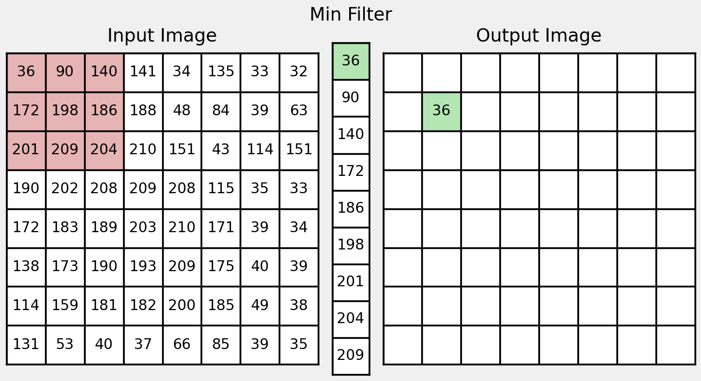
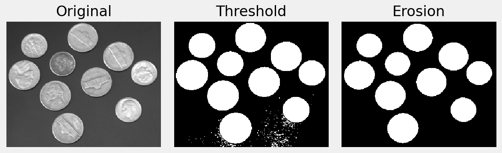
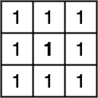
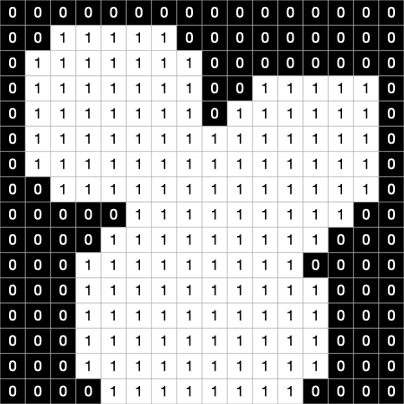
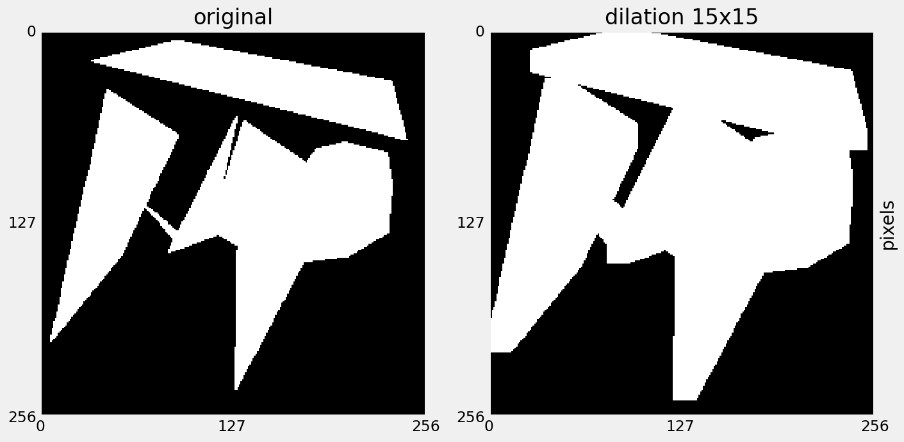
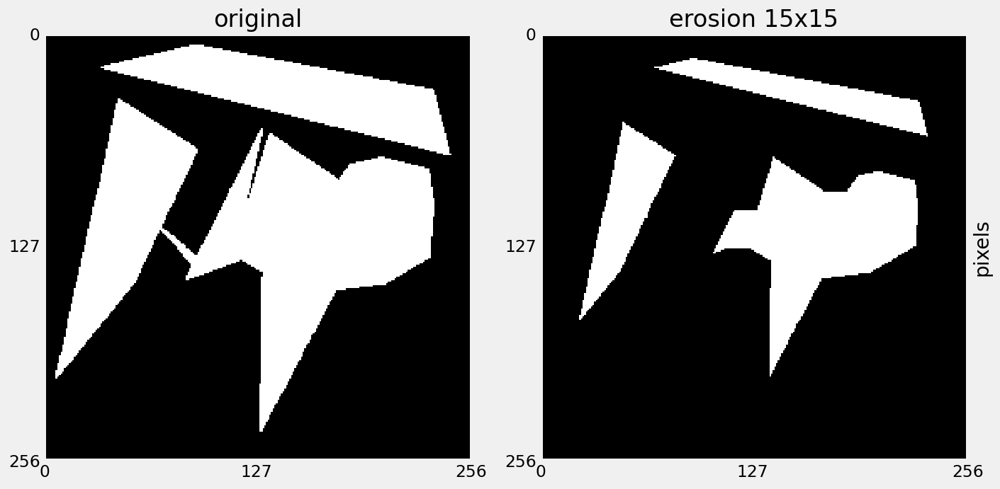
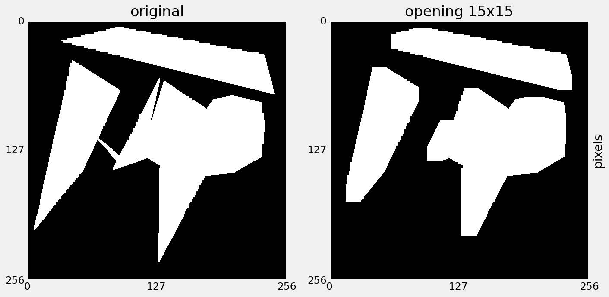
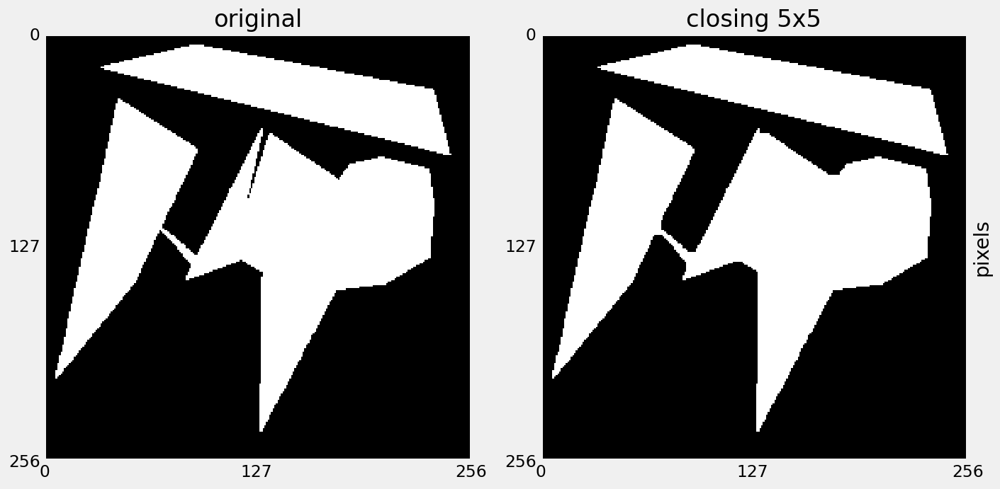
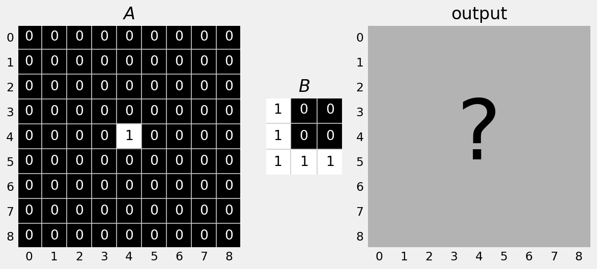

Order-Statistics Filters
Linear filters compute the sum of products between kernel coefficients and the image neighbourhood.
Instead, replace intensity with a measure obtained by ordering the pixel intensities in the neighbourhood.
- Common filters are median, max and min.
Crop a part of a larger image to uses as an example.
 Cameraman crop
Cameraman crop
First, window a region of size 3x3:
 region window
region window
Sort the intensities in the region:
 ordered values
ordered values
Sort the intensities in the region, and select the middle value:
 median value
median value
Max filter is similar to median filter, but selects the maximum value:
 maximum value
maximum value
Min filter is again similar, but selects the minimum value:
minimum value
Order-statistics filters are good for noise removal where:
- Noise is random
- Noise is not dependent on surrounding pixels
For example, the salt and pepper noise model:
- Noisy pixels are the outliers in the local neighbourhood
- Replace outliers with estimate from image data
Aside: What is salt and pepper noise?
- Also called impulse noise.
- Can be hardware dependent - hot pixels or dead pixels.
- Artificially applied by random selecting a subset of pixels and setting to black or white.
Noise removal
If we consider this 5 pixel neighbourhood, what will the median filter do?
Noise removal
The median filter removes spike noise.
- What will the gaussian filter do?
Noise removal
The Gaussian filter amplifies noise.
Morphological Filters
Operation of the filter is characterised by mathematical morphology.
- Embedded in set theory.
- Useful for thickening and thinning edges and de-noising binary images
Motivation
Filtered Threshold Image
Morphological Filters
For binary images:
- White pixels (with intensity 1) can be considered elements in a set.
- Black pixels (with intensity 0) can be considered elements outside of the set.
- Morphological filters are essentially set operations.
Set Notation
\[\text{Let } A \text{ be a set in } \mathbb{Z}^{2}\]
the set of all integers in 2 dimensions…
Set Notation
\[ a \in A \text{ if } a = (x, y) \text{ is an element of set } A \]
this is the element symbol…
Set Notation
\[ a \notin A \text{ if } a \text{ is not in } A \]
not in…
Set Notation
\[ C = \{ w|w = -d, ~ for ~ d \in D \} \]
the set of all \(w\) such that…
Set Notation
\[\emptyset \text{ is the empty set} \]
Set Operations
Given two sets, A and B, the following can be defined:
Set Operations
\[C \subseteq B, A \nsubseteq B\]
Subset: a set where all members belong to a given set.
Set Operations
\[A \cup B\]
Union: all elements that are either in set A or set B.
Set Operations
\[A \cap B\]
Intersection: all elements that are common to both A and B.
Set Operations
\[A^{c} \{w|w ~\notin ~ A\}\]
Complement: the elements not contained in set A
Set Operations
\[A \setminus B = \{w|w ~\in ~ A,~ w ~\notin ~ B \}\]
Difference: the elements of set A that are not in set B
Dilation
\[A \oplus B = \{ x, y| B_{x, y} \cap A \neq \emptyset \} \]
Defines dilation of binary image \(A\) by structuring element \(B\).
Calculate the binary OR of elements in \(A\) masked by \(B\).
The structuring element hits the image.
Dilation
 binary image
binary image
\[A \oplus B\]
structured element
Dilation
 binary image
binary image
dilated image
Dilation Example
 dilation 5x5
dilation 5x5
Dilation Example
dilation 15x15
Dilation
- Expands the size of 1-pixel objects
- Smoothes object boundaries
- Closes holes and gaps
- Regions grow
Erosion
\[A \ominus B = \{ x, y| B_{x, y} \subseteq A \} \]
Defines erosion of binary image \(A\) by structuring element \(B\).
Calculate the binary AND of elements in \(A\) masked by \(B\).
The structuring element fits the image.
Erosion
 binary image
binary image
\[A \ominus B\]
structured element
Erosion
 binary image
binary image
 eroded image
eroded image
Erosion Example
 erosion 5x5
erosion 5x5
Erosion Example
erosion 15x15
Erosion
- Shrinks the size of 1-valued objects.
- Smooths object boundaries.
- Removes peninsulas, fingers, and small objects (such as noise).
Opening
\[A \circ B = (A \ominus B) \oplus B \]
Erosion followed by Dilation.
- Has the effect of smoothing contours by breaking narrow connections and eliminating thin protrusions.
Opening Example
 opening 5x5
opening 5x5
Opening Example
opening 15x15
Closing
\[A \bullet B = (A \oplus B) \ominus B \]
Dilation followed by Erosion.
- Has the effect of smoothing contours by filling narrow gulfs, holes and small gaps.
Closing Example
closing 5x5
Closing Example
 closing 15x15
closing 15x15
QUESTION?
After performing dilation of A by B, what does the resulting binary image look like?

Answer
After performing dilation of A by B, what does the resulting binary image look like?